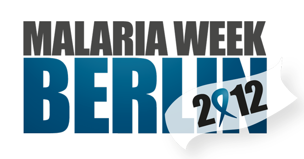

Neuigkeiten
Hope Foundation präsentiert die bevorstehende Malaria Week Berlin 2012
09. Februar 2012
Hope Foundation freut sich, Ihnen die Berliner Malaria Week (18.-25. April) vorstellen zu können. Diese Veranstaltungsreihe findet im Rahmen des Projekts „Malaria Free Cameroon“ (MFC) rund um den jährlichen Welt-Malaria-Tag am 25. April statt. Unser Ziel ist es, in Deutschland ein Bewusstsein für Malaria zu schaffen und Unterstützung für das Projekt in Kamerun zu gewinnen.
Die Weltgesundheitsorganisation (WHO) macht die durch Moskitostiche übertragene Krankheit Malaria für bis zu 2 Tote pro Minute verantwortlich. Diese Zahlen sind umso schockierender, da Malaria sowohl vermeidbar als auch behandelbar ist. Einige öffentliche Behörden und Nicht-Regierungsorganisationen nehmen dieses Problem bereits gemeinsam in Angriff durch vielversprechende und innovative Bildungsmaßnahmen und Präventionsmethoden.
Das MFC Projekt unterstützt die am stärksten betroffenen Gemeinden in Kamerun mit einem dreigleisigen Ansatz: öffentliche Bildung, Verteilung von mit Insektiziden behandelten Moskitonetzen und Unterstützung von lokalen Gesundheitszentren. 2012 konzentriert sich MFC auf die Region in und um Bosquet im Östlichen Kamerun.
Im Rahmen der MFC Malaria-Woche Berlin finden die folgenden, öffentlichen Veranstaltungen statt:
Podiumsdiskussion:
• Thema: "Coherence in the Fight Against Malaria: Recognizing Challenges"
• Teilnehmende: Dr. Gerhard Hesse (Bayer Environmental Sciences); Dr. Christiane Haas (Deutsches Rotes Kreuz-Generalsekretariat); Prof. Dr. med. Frank Mockenhaupt (Institut für Tropenmedizin und Internationale Gesundheit, Berlin); Prof. Dr. Peter H. Seeberger (Max-Planck-Institute of Colloids and Interfaces, Department of Biomolecular Systems); Carolina Quesada (Moderation/Funkhaus Europa).
• Datum: 18. April 2012, 18:00-20:00, @ Veranstaltungsort wird noch bekannt gegeben
Malariathon: Benefiz-Lauf gegen Malaria
• Teilnahme: Offen für Jedermann (Schüler, Eltern, Firmen ...)
• Datum: 21. April 2012, ab 10:00,
• Ort: Tempelhofer Freiheit (ehemaliger Flughafen Tempelhof)
Nets for Nets: Charity Tunier ~Tennis Beach-Volleyball Turnier zur Unterstützung des Projekts “Malaria Free Cameroon”
• Teilnahme: Offen für Jedermann (Schüler, Eltern, Firmen ...)
• Datum: 23. Juni 2012, ab 10:00,
• Ort: SPOK Pankow (www.spok.de)
Charity Party: … mit Soul & Jazz zum Welt-Malaria-Tag
• Künstler: Ingrid Arthur; Ricky Stoute; Stephanie Ani Kresse; Cornelia Moore.
• Datum: 25. April 2012, 21:00,
• Ort: Veranstaltungsort wird noch bekannt gegeben
Hope Foundation möchte Jeden ermutigen, teilzunehmen, zu helfen und ein besonderes Sportevent zu genießen. Wir begrüßen jegliche Teilnahme, sei am Sportevent selbst, als Partner, Sponsor oder freiwilliger Helfer!
Wenn Sie mehr über das Projekt oder die Kampagne erfahren möchten, kontaktieren Sie uns!
info@hope-found.org
Tel: 030 5446 0643 / 01775067363